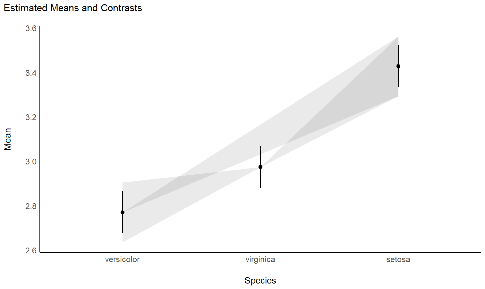

Taking your models to new heights
modelbased is a package helping with model-based estimations, to easily compute of marginal means, contrast analysis and model predictions.
Installation


Run the following to install the stable release of modelbased from CRAN:
install.packages("modelbased")Or this one to install the latest development version:
install.packages("remotes")
remotes::install_github("easystats/modelbased")Documentation


Click on the buttons above to access the package documentation and the easystats blog, and check-out these vignettes:
Features
The package is built around 5 main functions:
-
estimate_means(): Estimates the average values at each factor levels -
estimate_contrasts(): Estimates and tests contrasts between different factor levels -
estimate_slopes(): Estimates the slopes of numeric predictors at different factor levels or alongside a numeric predictor -
estimate_response(): Predict the response variable using the model
These functions are powered by the visualisation_matrix() function, a smart tool for guessing the appropriate reference grid.
Create smart grids to represent complex interactions
- Problem: I want to graphically represent the interaction between two continuous variable. On top of that, I would like to express one of them in terms of standardized change (i.e., standard deviation relative to the mean).
-
Solution: Create a data grid following the desired specifications, and feed it to the model to obtain predictions. Format some of the columns for better readability, and plot using
ggplot.
Check-out this vignette for a detailed walkthrough on visualisation matrices.
library(ggplot2)
library(see)
library(modelbased)
# 1. Fit model and get visualization matrix
model <- lm(Sepal.Length ~ Petal.Length * Petal.Width, data = iris)
# 2. Create a visualisation matrix with expected Z-score values of Petal.Width
vizdata <- modelbased::visualisation_matrix(model, at = c("Petal.Length", "Petal.Width = c(-1, 0, 1)"))
# 3. Revert from expected SD to actual values
vizdata <- effectsize::unstandardize(vizdata, select = "Petal.Width")
# 4. Add predicted relationship from the model
vizdata <- modelbased::estimate_expectation(vizdata)
# 5. Express Petal.Width as z-score ("-1 SD", "+2 SD", etc.)
vizdata$Petal.Width <- effectsize::format_standardize(vizdata$Petal.Width, reference = iris$Petal.Width)
# 6. Plot
ggplot(iris, aes(x = Petal.Length, y = Sepal.Length)) +
# Add points from original dataset (only shapes 21-25 have a fill aesthetic)
geom_point2(aes(fill = Petal.Width), shape = 21, size = 5) +
# Add relationship lines
geom_line(data = vizdata, aes(y = Predicted, color = Petal.Width), size = 1) +
# Improve colors / themes
scale_color_viridis_d(direction = -1) +
scale_fill_viridis_c(guide = "none") +
theme_modern()Estimate marginal means
- Problem: My model has a factor as a predictor, and the parameters only return the difference between levels and the intercept. I want to see the values at each factor level.
- Solution: Estimate model-based means (“marginal means”). You can visualize them by plotting their confidence interval and the original data.
Check-out this vignette for a detailed walkthrough on marginal means.
# 1. The model
model <- lm(Sepal.Width ~ Species, data = iris)
# 2. Obtain estimated means
means <- estimate_means(model)
means
## Estimated Marginal Means
##
## Species | Mean | SE | 95% CI
## ---------------------------------------
## setosa | 3.43 | 0.05 | [3.33, 3.52]
## versicolor | 2.77 | 0.05 | [2.68, 2.86]
## virginica | 2.97 | 0.05 | [2.88, 3.07]
##
## Marginal means estimated at Species
# 3. Plot
ggplot(iris, aes(x = Species, y = Sepal.Width)) +
# Add base data
geom_violin(aes(fill = Species), color = "white") +
geom_jitter2(width = 0.05, alpha = 0.5) +
# Add pointrange and line from means
geom_line(data = means, aes(y = Mean, group = 1), size = 1) +
geom_pointrange(
data = means,
aes(y = Mean, ymin = CI_low, ymax = CI_high),
size = 1,
color = "white"
) +
# Improve colors
scale_fill_material() +
theme_modern()
Contrast analysis
- Problem: The parameters of my model only return the difference between some of the factor levels and the intercept. I want to see the differences between each levels, as I would do with post-hoc comparison tests in ANOVAs.
- Solution: Estimate model-based contrasts (“marginal contrasts”). You can visualize them by plotting their confidence interval.
Check-out this vignette for a detailed walkthrough on contrast analysis.
# 1. The model
model <- lm(Sepal.Width ~ Species, data = iris)
# 2. Estimate marginal contrasts
contrasts <- estimate_contrasts(model)
contrasts
## Marginal Contrasts Analysis
##
## Level1 | Level2 | Difference | 95% CI | SE | t(147) | p
## ------------------------------------------------------------------------------
## setosa | versicolor | 0.66 | [ 0.49, 0.82] | 0.07 | 9.69 | < .001
## setosa | virginica | 0.45 | [ 0.29, 0.62] | 0.07 | 6.68 | < .001
## versicolor | virginica | -0.20 | [-0.37, -0.04] | 0.07 | -3.00 | 0.009
##
## Marginal contrasts estimated at Species
## p-value adjustment method: Holm (1979)
Check the contrasts at different points of another linear predictor
- Problem: In the case of an interaction between a factor and a continuous variable, you might be interested in computing how the differences between the factor levels (the contrasts) change depending on the other continuous variable.
- Solution: You can estimate the marginal contrasts at different values of a continuous variable (the modulator), and plot these differences (they are significant if their 95% CI doesn’t cover 0).
model <- lm(Sepal.Width ~ Species * Petal.Length, data = iris)
estimate_contrasts(model, at = "Petal.Length", length = 3)
## Marginal Contrasts Analysis
##
## Level1 | Level2 | Petal.Length | Difference | 95% CI | SE | t(144) | p
## --------------------------------------------------------------------------------------------
## setosa | versicolor | 1.00 | 1.70 | [ 0.87, 2.53] | 0.34 | 4.97 | < .001
## setosa | versicolor | 3.95 | 1.74 | [ 0.16, 3.32] | 0.65 | 2.67 | 0.023
## setosa | versicolor | 6.90 | 1.78 | [-1.71, 5.26] | 1.44 | 1.24 | 0.434
## setosa | virginica | 1.00 | 1.34 | [ 0.38, 2.30] | 0.40 | 3.38 | 0.003
## setosa | virginica | 3.95 | 1.79 | [ 0.19, 3.40] | 0.66 | 2.70 | 0.021
## setosa | virginica | 6.90 | 2.25 | [-1.19, 5.69] | 1.42 | 1.58 | 0.257
## versicolor | virginica | 1.00 | -0.36 | [-1.55, 0.83] | 0.49 | -0.73 | 0.747
## versicolor | virginica | 3.95 | 0.06 | [-0.30, 0.42] | 0.15 | 0.37 | 0.926
## versicolor | virginica | 6.90 | 0.47 | [-0.22, 1.16] | 0.28 | 1.65 | 0.229
##
## Marginal contrasts estimated at Species
## p-value adjustment method: Holm (1979)
# Recompute contrasts with a higher precision (for a smoother plot)
contrasts <- estimate_contrasts(model, at = "Petal.Length", length = 20)
# Add Contrast column by concatenating
contrasts$Contrast <- paste(contrasts$Level1, "-", contrasts$Level2)
# Plot
ggplot(contrasts, aes(x = Petal.Length, y = Difference, )) +
# Add line and CI band
geom_line(aes(color = Contrast)) +
geom_ribbon(aes(ymin = CI_low, ymax = CI_high, fill = Contrast), alpha = 0.2) +
# Add line at 0, indicating no difference
geom_hline(yintercept = 0, linetype = "dashed") +
# Colors
theme_modern()
Generate predictions from your model to compare it with original data
- Problem: You fitted different models, and you want to intuitively visualize how they compare in terms of fit quality and prediction accuracy, so that you don’t only rely on abstract indices of performance.
- Solution: You can predict the response variable from different models and plot them against the original true response. The closest the points are on the identity line (the diagonal), the closest they are from a perfect fit.
Check-out this vignette for a detailed walkthrough on predictions.
# Fit model 1 and predict the response variable
model1 <- lm(Petal.Length ~ Sepal.Length, data = iris)
pred1 <- estimate_response(model1)
pred1$Petal.Length <- iris$Petal.Length # Add true response
# Print first 5 lines of output
head(pred1, n = 5)
## Model-based Classification
##
## Sepal.Length | Predicted | SE | 95% CI | Residuals | Petal.Length
## --------------------------------------------------------------------------
## 5.10 | 2.38 | 0.87 | [ 0.65, 4.10] | 0.98 | 1.40
## 4.90 | 2.00 | 0.87 | [ 0.28, 3.73] | 0.60 | 1.40
## 4.70 | 1.63 | 0.88 | [-0.10, 3.36] | 0.33 | 1.30
## 4.60 | 1.45 | 0.88 | [-0.29, 3.18] | -0.05 | 1.50
## 5.00 | 2.19 | 0.87 | [ 0.46, 3.92] | 0.79 | 1.40
##
## Variable predicted: Petal.Length
# Same for model 2
model2 <- lm(Petal.Length ~ Sepal.Length * Species, data = iris)
pred2 <- estimate_response(model2)
pred2$Petal.Length <- iris$Petal.Length
# Initialize plot for model 1
ggplot(data = pred1, aes(x = Petal.Length, y = Predicted)) +
# with identity line (diagonal) representing perfect predictions
geom_abline(linetype = "dashed") +
# Add the actual predicted points of the models
geom_point(aes(color = "Model 1")) +
geom_point(data = pred2, aes(color = "Model 2")) +
# Aesthetics changes
labs(y = "Petal.Length (predicted)", color = NULL) +
scale_color_manual(values = c("Model 1" = "blue", "Model 2" = "red")) +
theme_modern()
Extract and format group-level random effects
- Problem: You have a mixed model and you would like to easily access the random part, i.e., the group-level effects (e.g., the individuals scores).
-
Solution: You can apply
estimate_grouplevelon a mixed model.
See this vignette for more information.
library(lme4)
model <- lmer(mpg ~ drat + (1 + drat | cyl), data = mtcars)
random <- estimate_grouplevel(model)
random
## Group | Level | Parameter | Coefficient | SE | 95% CI
## -----------------------------------------------------------------
## cyl | 4 | (Intercept) | -3.45 | 0.56 | [-4.55, -2.36]
## cyl | 4 | drat | 2.24 | 0.36 | [ 1.53, 2.95]
## cyl | 6 | (Intercept) | 0.13 | 0.84 | [-1.52, 1.78]
## cyl | 6 | drat | -0.09 | 0.54 | [-1.15, 0.98]
## cyl | 8 | (Intercept) | 3.32 | 0.73 | [ 1.89, 4.74]
## cyl | 8 | drat | -2.15 | 0.47 | [-3.07, -1.23]
plot(random)
Estimate derivative of non-linear relationships (e.g., in GAMs)
- Problem: You model a non-linear relationship using polynomials, splines or GAMs. You want to know which parts of the curve are significant positive or negative trends.
-
Solution: You can estimate the derivative of smooth using
estimate_slopes.
Check-out this vignette for a detailed walkthrough on marginal effects.
# Fit a non-linear General Additive Model (GAM)
model <- mgcv::gam(Sepal.Width ~ s(Petal.Length), data = iris)
# 1. Compute derivatives
deriv <- estimate_slopes(model,
trend = "Petal.Length",
at = "Petal.Length",
length = 100
)
# 2. Visualise
plot(deriv)Describe the smooth term by its linear parts
- Problem: You model a non-linear relationship using polynomials, splines or GAMs. You want to describe it in terms of linear parts: where does it decrease, how much, where does it increase, etc.
-
Solution: You can apply
describe_nonlinearon a predicted relationship that will return the different parts of increase and decrease.
See this vignette for more information.
model <- lm(Sepal.Width ~ poly(Petal.Length, 2), data = iris)
# 1. Visualize
vizdata <- estimate_relation(model, length = 30)
ggplot(vizdata, aes(x = Petal.Length, y = Predicted)) +
geom_ribbon(aes(ymin = CI_low, ymax = CI_high), alpha = 0.3) +
geom_line() +
# Add original data points
geom_point(data = iris, aes(x = Petal.Length, y = Sepal.Width)) +
# Aesthetics
theme_modern()
# 2. Describe smooth line
describe_nonlinear(vizdata, x = "Petal.Length")
## Start | End | Length | Change | Slope | R2
## ---------------------------------------------
## 1.00 | 4.05 | 0.50 | -0.84 | -0.28 | 0.05
## 4.05 | 6.90 | 0.47 | 0.66 | 0.23 | 0.05Plot all posterior draws for Bayesian models predictions
See this vignette for a walkthrough on how to do that.

Understand interactions between two continuous variables
Also referred to as Johnson-Neyman intervals, this plot shows how the effect (the “slope”) of one variable varies depending on another variable. It is useful in the case of complex interactions between continuous variables.
For instance, the plot below shows that the effect of hp (the y-axis) is significantly negative only when wt is low (< ~4).
model <- lm(mpg ~ hp * wt, data = mtcars)
slopes <- estimate_slopes(model, trend = "hp", at = "wt")
plot(slopes)
Visualize predictions with random effects
Aside from plotting the coefficient of each random effect (as done here), we can also visualize the predictions of the model for each of these levels, which can be useful to diagnostic or see how they contribute to the fixed effects. We will do that by making predictions with estimate_relation and setting include_random to TRUE.
Let’s model the reaction time with the number of days of sleep deprivation as fixed effect and the participants as random intercept.
library(lme4)
model <- lmer(Reaction ~ Days + (1 | Subject), data = sleepstudy)
preds <- estimate_relation(model, include_random = TRUE)
plot(preds, ribbon = list(alpha = 0)) # Make CI ribbon transparent for clarity
As we can see, each participant has a different “intercept” (starting point on the y-axis), but all their slopes are the same: this is because the only slope is the “general” one estimated across all participants by the fixed effect. Let’s address that and allow the slope to vary for each participant too.
model <- lmer(Reaction ~ Days + (1 + Days | Subject), data = sleepstudy)
preds <- estimate_relation(model, include_random = TRUE)
plot(preds, ribbon = list(alpha = 0.1))
As we can see, all participants has now a different effect. Let’s plot, on top of that, the “fixed” effect estimated across all these individual effects.
fixed_pred <- estimate_relation(model) # This time, include_random is FALSE (default)
plot(preds, ribbon = list(alpha = 0)) + # Previous plot
geom_ribbon(data = fixed_pred, aes(x = Days, ymin = CI_low, ymax = CI_high), alpha = 0.4) +
geom_line(data = fixed_pred, aes(x = Days, y = Predicted), size = 2)